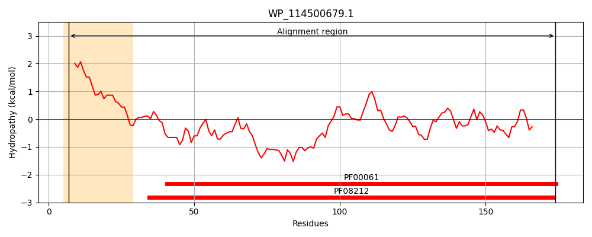
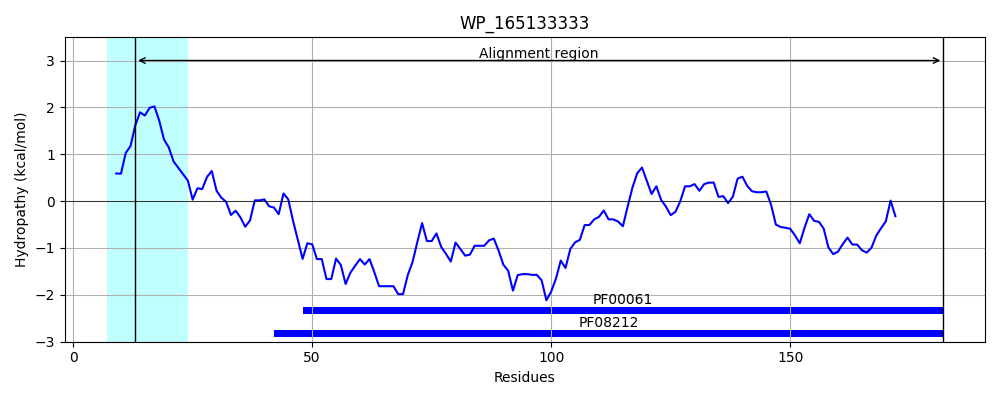
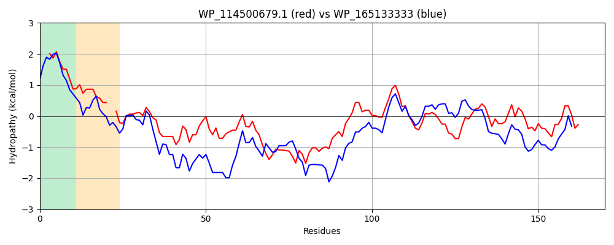

Hit Accession: WP_165133333
Hit TCID: 8.A.180.1.3
Hit Description: gnl|BL_ORD_ID|22035 gnl|TC-DB|WP_165133333.1|8.A.180.1.3 lipocalin family protein [Chryseobacterium sp. POL2]
Mach Len: 170
e:0.000000
Query TMS Count : 1
Hit TMS Count: 1
TMS-Overlap Score: 0.700000
Predicted Substrates:None
BLAST Alignment:
Score: 385 , Bit scores: 152 bits, E-value: 1.3e-47, Alignment length: 170, Percentage identity: 42
Query: 7 ITAIAVSFLSVACSTPTPPPG--VTVVSPFDVQRYLGTWYEIARFDHPFESGLEKVTIAWHPGDDGGLDVVNKGYNPDRGMWQKTDGVAYFTGEPSRAALKISFFGPFYGSYNVIALDKEYRYALVCGPDRDYLWLLARAPTIAPEVRQQMLDIATRQGFDVSKLIWVNQ 174
I A+ ++ +++ACST V VV FDV RY+G WYEIAR D E L+ VT + DDG + VVNKGYN + W++ G A F G ++ ALK+SFFGPFY YN++ +D Y L+ G DY+W+L+R TI +Q+ + A QG+D+ +L+W Q
Sbjct: 13 IAALGITAITIACSTKKGKMSSKVVVVQNFDVNRYVGQWYEIARQDFKHEKDLKNVTANYSKRDDGKIAVVNKGYNYVKNEWEEAHGKAKFNGPENKGALKVSFFGPFYSEYNIVMMDPSYETVLIFGESTDYIWILSRNKTIPEATKQKFVAYAKEQGYDIKRLVWTIQ 182 | Protein Hydropathy Plots: |
|---|
|  |  |
Pairwise Alignment-Hydropathy Plot:
|
|---|
|  |